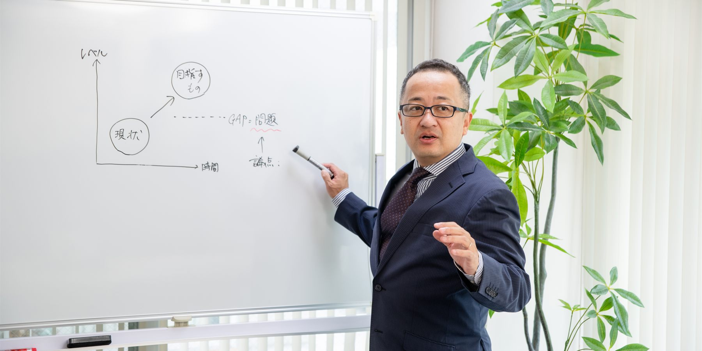

経営に関するご相談
経営戦略と経営計画の策定から、組織方針とKPI・目標への落とし込み、月次の経営会議・部門長会議まで。経営顧問として継続して入ります。初回60分は無料です。問題意識はあるものの、課題の優先順位が定まっていない段階でもご相談いただけます。
相談する Speaking講演・企業研修
新入社員から管理職・経営層までの階層別研修、会計基本理解・ロジカルシンキング・問題解決・生成AI活用などのテーマ別研修を行っています。経営やDX、組織づくりをテーマとした講演・セミナーにも登壇しています。
依頼する Media書いているもの、話しているもの
経営や組織について考えていること、現場で感じたことを、経営コラム、note、YouTube、音声で発信しています。記事の執筆・監修、取材もお受けしています。
読む・観る・聴く仕事について
会社の中には、みんな薄々分かっているのに、誰も口にしないことがあります。
私は、そこを扱います。ただし、いきなり正論をぶつけることはしません。まず、話を聞きます。
社内の人間が本当のことを言うと、立場を失うリスクがあります。同じ内容でも、社内の人が言えば人間関係や立場の問題になり、外部の人間が言えば経営の論点として扱える。それは能力の差ではなく、立場の差です。
利害関係がなく、社内のどの派閥にも属していない。だから、その線を越えられます。
会社の中で、
何を見ているか
現場で実際に起きていることを見て、管理職と話し、そのうえで社長と一緒に考えます。社長とだけ話して判断することはしません。
経営戦略、組織・人材、業務プロセス、会計、IT。
どこへ向かうか、誰が担うか、どう回すか、どう測るか、何で支えるか。問いはそれぞれ違います。ただし、切り離すことはできません。
私が専門を一つに絞っていないのは、経営の問題は、戦略、組織、人材育成、業務、会計、ITなどが互いにつながって起きていることが多いからです。一つの領域だけを最適化しても、会社全体としては別のところにひずみが出ます。
そして、中堅・中小企業では、課題ごとに何人もの専門家を入れることが現実的とは限りません。だから私は、経営全体を見渡しながら、自分で扱えるところは自分で扱い、必要に応じて専門家ともつなぐ。そういう立ち位置で支援しています。
もう一つ、理由があります。教科書どおりにやれば、うまくいくとは限らないからです。同じ打ち手でも、業績の状況、社長の考え方、管理職の力量、職場の空気、社員の思いによって、効くこともあれば、まったく動かないこともあります。
だから私は、手法を先に決めません。その会社で何が起きているのかを見てから、使うものを選びます。
私の仕事
何をしているか。そして、どういう順序でやっているか。順序は、入れ替えるとうまくいきません。
継続して、会社の中に入る
助言して終わり、という形はほとんどありません。経営顧問として、継続して会社の中に入ります。
- 経営者と一緒に、ビジョンと経営戦略を言葉にする。
- 中期経営計画に落とし、数値計画と行動計画をつくる。
- 管理職と一緒に、組織方針とKPI、目標まで分解する。
- 経営方針発表会で、社長・役員・部門長が自分の言葉で社員に話す。
- 月次の経営会議・部門長会議に出て、PDCAを回す。
- 経営者と幹部のコーチングをする。必要なら研修もやる。
役員会にも、幹部会議にも、部門長会議にも出ます。資料を送って終わりではなく、決まる場に居続けます。
続けて入るのには、理由があります。会社は、こちらの計画どおりには止まっていてくれません。人が入れ替わり、取引先が変わり、市場が動きます。決めたときには正しかったことが、半年後には合わなくなります。
そして、決めたことがそのとおりに実行されるとも限りません。やってみて初めて、どこで止まるのかが分かります。
だから、一度きりの提案では足りません。やってみてどうだったかを一緒に見て、次を決める。それを繰り返せる場所にいることが、私の役割だと思っています。
まず、話を聞く
言いにくいことを扱うにも、順序があります。まず、相手の話を聞く。ただし、聞いたことをそのまま受け取るのではなく、自分なりに考え、仮説を立てる。そして現場へ行き、自分の目で確かめます。
- 社長の話を聞く。
- 役員や管理職の話を聞く。
- 現場で働く人の話を聞く。
- 実際の仕事を、自分の目で見る。
そのうえで、聞いたことと見たことがつながるのかを、自分の仮説と突き合わせます。
すると、「この人が悪い」と思われていた問題の原因が、実は仕組みの問題だったということもあります。
逆に、「仕組みを変えれば何とかなる」と思われていた問題の原因が、実は社長自身にあったということもあります。
だから私は、最初から答えを決めつけて入りません。
話を聞き、現場を見て、何が起きているのかを一緒に整理する。そこから始めます。
答えを持ち込まない。でも、手ぶらでは入らない。
決めつけないというのは、何も持たずに聞いている、という意味ではありません。
経営戦略、組織・人材、業務、会計、IT。これまで学び、実践してきた原理原則を持って入ります。それを使って、いま何が起きているのか、どこに原因がありそうかの見当をつける。ただし、それを正解とは考えません。
原理原則だけでは、会社は動きません。かといって、経験や勘だけに頼るのも危うい。
原理原則は、正解を教えてくれるものではなく、大きく道を外さないための地図です。地図を見ながら、その会社の道は現場で決める。
一緒に整理する、というのは
私は、問題・原因・課題を分けて考えます。
- 問題は、ありたい姿と現状とのギャップ。
- 原因は、なぜそのギャップが生まれているのか。
- 課題は、そのギャップを埋めるために、いま優先して取り組むテーマ。
経営資源には限りがあります。だから、表面化した問題すべてを一気に解決することはできません。原因を分け、影響を見て、どこから手をつけるかを決めていきます。
複雑な問題ほど、そのまま考えようとすると、何が分からないのかさえ分からなくなります。
だから、問題と原因を分ける。人と仕組みを分ける。事実と解釈を分ける。影響の大きいものと小さいものを分ける。
わからないことは、分ける。
分けていくと、どこを確かめ、何から手をつければいいのかが見えてきます。

私が間に入ると、着地点が見えることがある
立場が違えば、見え方が違います。会長と社長、社長と管理職、管理職と現場、部門どうし。同じ取締役会の中でも、取締役同士で立場や考えが違えば見えているものは違います。
やっかいなのは、対立しているときではありません。同じ目的で話しているのに、認識だけがずれているときです。本人たちに、ずれている自覚がありません。
DX構想策定のコンサルティングを推進したとき、2つの部門の部長が対立して、要件が決まらなくなったことがあります。両方から聞くと、どちらも「顧客満足度を上げる」という目的は同じで、ずれていたのはそのアプローチだけでした。目的は同じであること、ずれている部分はどこかを、ホワイトボードに並べて書きながら整理していくと、両方が「確かにそうだ」と言いました。
役員会では、こんなこともあります。取締役が、社長に直接は言いにくい意見を、私のほうを見ながら話す。
私は、それをそのまま伝言しません。自分なりに論点を整理し、必要であれば自分の意見も加えて、社長に問いかけます。すると、取締役から社長へ直接ぶつけるのではなく、第三者から出された経営の論点として扱えます。
同じ会議室にいても、立場が違えば直接は言えないことがあります。私が間にいることで、話せることがあります。
人はみんな違う。その前提に立ち、立場の違う人たちの間に入って、共通する目的と着地点を探す。私は、そういう仕事を何度もしてきました。
必要なら、言いにくいことも言う
ある社長には、こうお伝えしたことがあります。
会社がこれ以上大きくならない原因は、社長、あなたですよ。
もちろん、最初からそのようなことを社長に伝えるわけではありません。そこに至るまでに、何人もの話を聞き、会議を見て、実際の仕事を見ています。そのうえで、会社をさらに成長させるために必要だと判断すれば、言います。
外部の人間を入れる意味は、社内では言いにくいことも、経営の論点として扱えることにあると思っています。
でも、代わりにはやらない
私は、答えを渡して終わるコンサルティングはしたくありません。
経営計画も、業務フローも、私が作った方が早いことはあります。しかし、それでは自分たちで考え、回していく力が社内に残りません。
外から正しいことを言うだけでも、会社は動きません。変化を伴う取り組みは、「言われたからやる」だけでは続かないからです。
だから、答えを置くのではなく、問いを渡します。
問いに向き合うことで、自分たちが何を考えているのかが言葉になります。自分の言葉で考え、自分たちで決める。そこから、実行する理由が生まれます。
私は外部の人間なので、社内の実行主体にはなれません。実際に動くのは、社内の人たちです。だから、その人たちが自分で考え、動ける状態をつくることに時間を使います。
一緒に作る。必要なことは教える。一緒にやってみる。そして、少しずつ自分たちで回せるようにする。
研修も同じです。知識を覚えて帰ってもらうことが目的ではありません。研修で扱っていない問題に出会ったときにも、自分で考え、答えを出せるようになること。そのためにやっています。
だから私は、自分がうまく説明できたかではなく、相手が理解し、自分で使えるようになったかを見ます。
最後は「唐澤さんがいなくても、できるようになりました」と言われる状態をつくる。それが、この仕事のゴールだと思っています。
支援の現場
3件とも、相談されたことと、本当の問題が違いました。
-
Case 01
「経営理念をつくりたい」と言われて、組織の形を変えた
- 相談されたこと
- 新規事業で会社をもっと大きくしたい。ただ、いまの組織のままでは難しい。だから経営理念をつくって、社内に浸透させたい。
- 見えてきたこと
- 話を聞いていくと、相談された内容とはまったく別のことが出てきました。創業以来、会社を支えてきた優秀な二人が、いつのまにか組織の天井になっていた。二人が現場の最前線に立ち続けていて、若い世代に役割と権限が移る順番が来ない。本人たちだけの問題ではありません。役割と責任範囲が曖昧なまま、権限が二人に集中する組織になっていた。そして、その形をつくってきたのは社長自身です。社長も、この状況に困っていました。経営理念をつくっても、この形のままでは浸透しません。
- やったこと
- 社長に、これから会社を担ってほしい次世代のリーダー候補を選んでもらい、一人ひとりから話を聞きました。出てきた意見を論点として整理し、本人たちからは言いにくいことも含めて、私から社長に伝えました。そのうえで、こう申し上げました。「もっと権限を委譲しながら若手を抜擢して、組織体制を変えていかないと大きくなりませんよ」。
- その後
- 権限の持たせ方と役割を組み替え、若手が案件を任される形に変わりました。経営理念づくりは、その後です。
- やらなかったこと
- 依頼されたとおりに経営理念をつくること。つくれば納品はできますが、壁に貼られて終わります。
-
Case 02
構想は、つくるだけでは動かない
- 相談されたこと
- IT化構想の策定。生産性を上げ、経営の数字が見えるようにしたい。
- 見えてきたこと
- 技術の問題ではありませんでした。過去にも構想はつくられていて、そのたびに最後でひっくり返されていた。本当の論点は、誰が決めるかでした。
- やったこと
- 現場と管理部門を回って業務を洗い出し、あるべき姿を一緒に設計しました。そして、社内で「反対派」と見られていた役員のところへ、一人で話を聞きに行きました。
「反対する人」と決めつけず、何を懸念しているのか、何なら納得できるのかを確認しました。論点を一つずつ整理した結果、最終的に改革への賛同を得ることができました。 - その後
- 構想はひっくり返らず、システムの導入まで進みました。
- やらなかったこと
- 派閥のラベルで、人を分けること。
-
Case 03
受注が増えて回らない。原因は人手ではなかった
- 相談されたこと
- 工事の受注が急に増えて、いまの体制では回らない。DXで生産性を上げたい。
- 見えてきたこと
- 業務を分解していくと、同じ情報を何度も入力し、集計し直していました。工事ごとの売上と原価は、締めてみないと分からない。足りなかったのは人手ではなく、工事番号を軸に、売上と原価を一つにつないで見る仕組みでした。
- やったこと
- 工事番号で情報を一元化する形を設計し、システムを選定して導入。あわせて月次決算を立ち上げ、資金繰りの管理を組み直しました。
- その後
- 運用開始から1年たたずに、管理部門の残業が20%以上減りました。月次で数字が出るようになり、意思決定が早くなっています。
- やらなかったこと
- 私が代わりに業務フローを書くこと。書き出しは、現場の方にやってもらいました。
企業が特定できる情報は書いていません。業種・規模・数字を含む実績の一覧は、事務所サイトの実績ページに掲載しています。
経営について
思っていること
経営の問題は、表面に出ている現象だけを追いかけても、なかなか解決しません。
- 売上が上がらない
- 人が育たない
- 会議が機能しない
- 社長が現場の仕事を抱え込んでいる
このような話を聞いたとき、私はすぐに「では、こうしましょう」とは言いません。
まず、なぜ、そうなっているのか。
正解を当てるより、修正できるようにする
経営では、最初から正解が分かっていることばかりではありません。情報を集めても、やってみなければ分からないことがあります。
だから私は、すべての情報が揃うまで待つのではなく、判断に必要な材料が揃ったところで決め、動きながら確かめていくことが大切だと考えています。
一度で正解を当てることより、致命的な失敗を避けながら、小さく試し、結果を見て修正できること。
そのために、いつまでやるのか、どこまで資源を投じるのか、どの状態になったら見直すのかを、できるだけ先に決めます。
精神論ではなく、技術にする
私は、経営もマネジメントも精神論ではなく、できる限り技術にしたいと思っています。
- 「もっと主体性を持て」ではなく → 主体的に動ける仕事の渡し方を考える
- 「覚悟を決めろ」ではなく → 決められる条件をつくる
- 「コミュニケーションを増やせ」ではなく → 何を、誰と、どう話すのかを決める
曖昧な言葉を、実際に行動できるところまで落とす。それが、私の仕事です。
人と組織について
思っていること
人は、違っていて当然
組織を上位2割・中位6割・下位2割で見る考え方があります。ただ、これは相対評価の目安であって、法則ではありません。下位の2割を切り離しても、残った人の中に新しい下位2割ができるだけです。
同じ人でも、役割や上司、チームが変われば、発揮できる力は変わります。だから私は、人を「できる人」「できない人」と分けることには慎重です。
その人を「できない人」と決めつける前に、強みが活きる役割はないか。力を発揮できていない理由は何か。そこを見ることが、人を預かる側の仕事だと思っています。
正論だけでは、人は動かない
正しいことを言えば人が動く、とは限りません。理屈が正しいかどうかより先に、「この人の話なら聞いてみよう」と思えるかどうかがあります。順番を間違えると、正しいことを言っているのに何も動きません。
組織も同じです。動かないのは、一人ひとりが分かっていないからではありません。一人ひとりは分かっているのに、組織としてひとつの方向にならないから動かない。そこを揃える支援をするのが、私の役割です。
人は、適切な期待と機会があれば変わる
20年以上、企業の現場で経営者、管理職、社員の方々と関わる中で、何度もそういう場面を見てきました。だから私は、できていないことを指摘するだけではなく、その人が次に何をできるようになるかを見るようにしています。
自分自身の正しさも、疑う
私自身にも、こう思いたくなる瞬間があります。
自分は正しい。自分は悪くない。自分は優れている。自分は変わりたくない。
そのように考える根っこには、自分の未熟さを認めたくないという恐れがある。私は、そう考えています。
だから、相手に変化を求めるときほど、自分の見立てが本当に正しいのかを疑います。感情ではなく、事実を見るためです。
人と関わるときに、しないと決めていること
- 01未経験の仕事を、教えずに任せる
- 02仕組みの問題を、個人の能力不足で片づける
- 03自分のやり方や基準を、そのまま相手に押しつける
それを裏づける
20年以上
起点は会計です。人・組織から入ったわけではありません。
キャリアの原点
新入社員のとき、会計の知識もシステム機能も十分に分からないまま、基幹システムの稼働後サポートを、お客様の拠点で一人で担当したことがあります。
わからないことは、そのままにできませんでした。簿記を学び、マニュアルを読み込み、実際に使っている人の席まで行って、画面を一緒に見ながら確認しました。
そのときに身についたのが、分からないことは自分で調べること。実際の現場を見ること。分かったふりをしないこと。そして、相手の代わりにやって終わらせないこと。
扱うテーマは、会計から業務改革、IT、経営、組織へと広がりました。ただ、仕事に向き合うときの基本姿勢は、今も変わっていません。
扱ってきた領域
この5つを、コンサルティングでも研修でも扱います。関わってきた会社は、従業員5名ほどから300名規模まで。業種は限定していません。
経営戦略
経営ビジョンと経営戦略の明確化、中期経営計画の策定と実行、組織方針とKPI・目標への落とし込み、事業計画、BtoB営業戦略。経営顧問として継続的に入り、月次の経営会議・部門長会議でPDCAを回します。
組織・人材
組織戦略と組織・人員計画、幹部育成、経営者・幹部へのコーチング、管理職研修、人事評価・賃金制度の設計と評価者研修、1on1、部下育成、事業承継。家族会議に第三者として入ることもあります。
業務プロセス
業務の見える化、業務プロセス改善、間接業務の効率化。現状の業務の可視化から入ります。
会計
決算早期化、内部統制、原価管理、管理会計。キャリアの起点であり、いまも数字から入ります。
IT・DX
DX戦略・IT構想の策定から、ERP・基幹システムの選定、RFP作成、ベンダー選定、導入プロジェクトの推進まで。特定の製品やベンダーを販売する立場ではないので、発注者側に立って比較・選定を支援できます。
経歴
埼玉県熊谷市出身。埼玉県立熊谷高等学校を経て、早稲田大学法学部卒業。
20年以上にわたり、業務改革、ITコンサルティング、DX推進支援、経営コンサルティングに携わってきました。
キャリアの前半は、大手企業を中心に、会計システム・原価管理システムの導入、ERP導入、IFRS影響度調査、決算早期化に向けた業務改革、内部統制支援、基幹システムの構想策定などを担当しました。数字とシステムを起点に、業務と経営を見る経験を重ねてきました。
2012年以降は、中堅・中小企業支援へと活動領域を広げました。大手IT企業において、中堅・中小企業向けITコンサルティング事業の企画・立ち上げに携わり、営業・提案からプロジェクト推進まで一貫して担当しました。その後は、コンサルティング組織のマネージャーとして、通算7年間、メンバー育成、評価・フィードバック、案件推進、組織運営に携わってきました。
2022年4月、在職中に唐澤経営コンサルティング事務所を開業。2024年9月に独立し、現在は中堅・中小企業を中心に、経営・組織・業務・会計・ITを横断した支援を行っています。
書いているところ、
話しているところ
読み手に合わせて置き場所を分けているだけで、出どころは1つです。
記事の執筆・監修、取材もお受けしています。
公的機関での登壇
- 01品川区主催「ツール導入を成功させるための業務の見える化と課題整理セミナー」2026年講師
- 02愛知県主催 DX Days 2026「中小企業の競争力を高めるDX戦略の立て方」2026年講師
- 03公益財団法人あいち産業振興機構主催「ゼロから始める！経営者のためのDX戦略研修」2025年度講師
- 04公益財団法人あいち産業振興機構主催「経営層・支援担当者向け デジタル人材育成研修」2024年度講師
- 05中小企業庁主催「法定経営指導員業務に関する実務講習」DX分野／東京都・香川県・広島県／2022年講師
他媒体での執筆・監修・講座
- 01会計事務所の強みを活かす！DXコンサルティング事業の立ち上げと安定収益化戦略株式会社ビズアップ総研「e人材」／本編・深化編／2026年eラーニング
- 02生産管理システムの比較・選び方デジタル化の窓口（株式会社クリエイティブバンク）／2025年記事監修
- 03新人が伸びる会計事務所は何をしているのか？ 〜OJTに「戦略」を持つという選択〜税理士.ch（株式会社ビズアップ総研）／2025年取材
- 04中小企業のコスト削減東日本電信電話株式会社（NTT東日本）特設サイト／制作：株式会社日経BPコンサルティング／2025年取材・会員限定
唐澤智哉を知るなら、この3本
ご相談・ご依頼
企画段階からのご相談も歓迎します。
- 経営のご相談（初回60分・無料）
- 講演・セミナー（企業主催／自治体・支援機関主催）
- 企業研修：階層別（新入社員／中堅社員／管理職／経営層）
- 企業研修：テーマ別（会計基本理解・管理会計／ロジカルシンキング／問題解決／プレゼンテーション／評価者研修／業務改善・IT／生成AI活用 ほか）
- eラーニング・動画講座の収録
- 記事の執筆・監修
- 取材・コメント
ご相談内容と、ご希望の時期・形式をお知らせください。ご予算が決まっている場合は、あわせてお知らせください。内容を確認したうえで、進め方をご相談させていただきます。